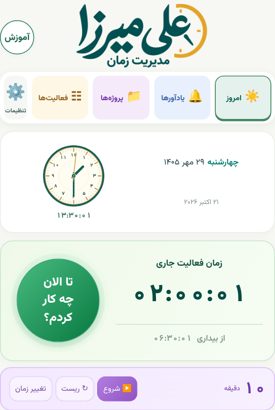
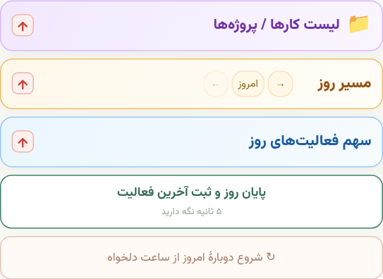
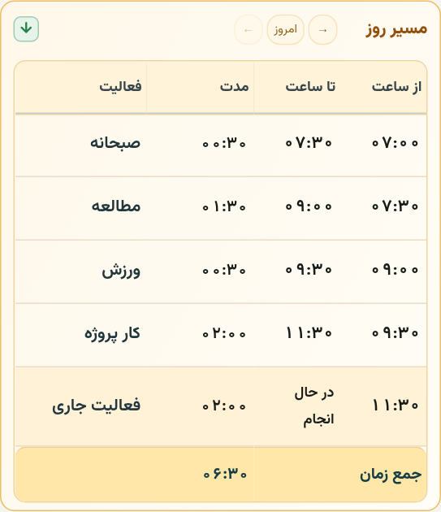
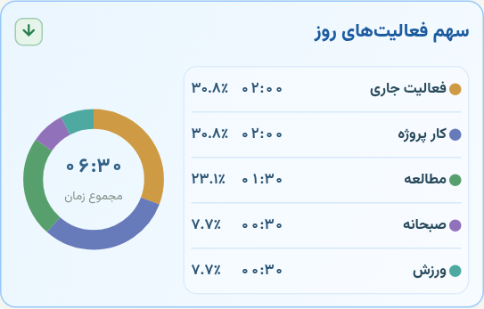
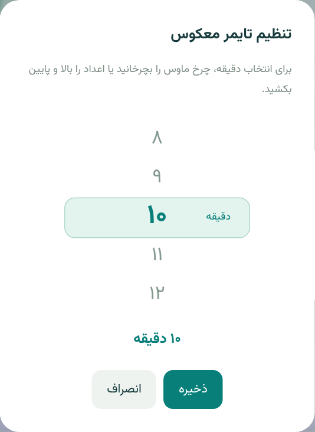
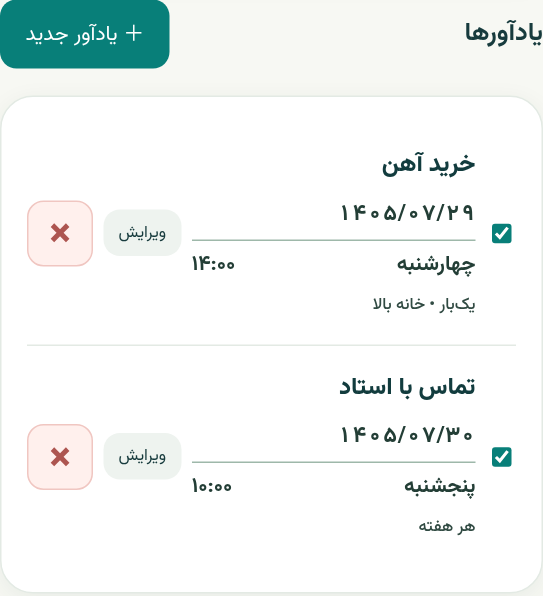
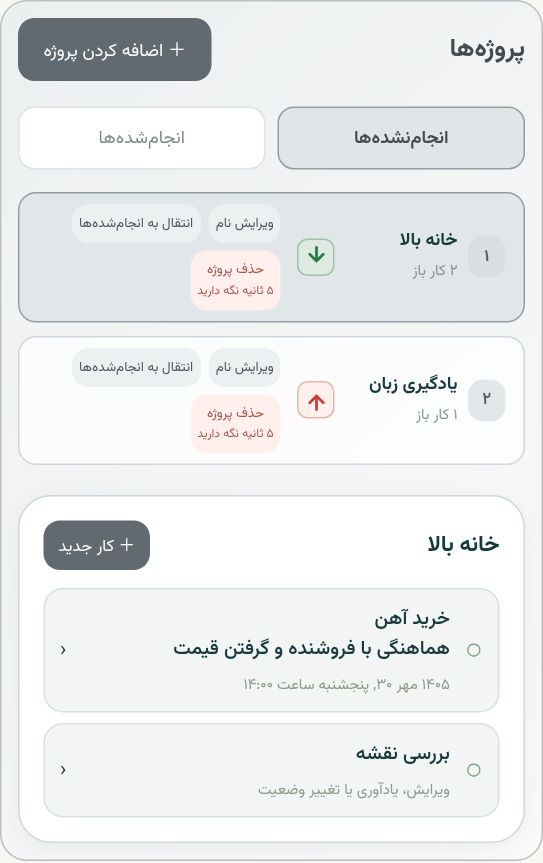
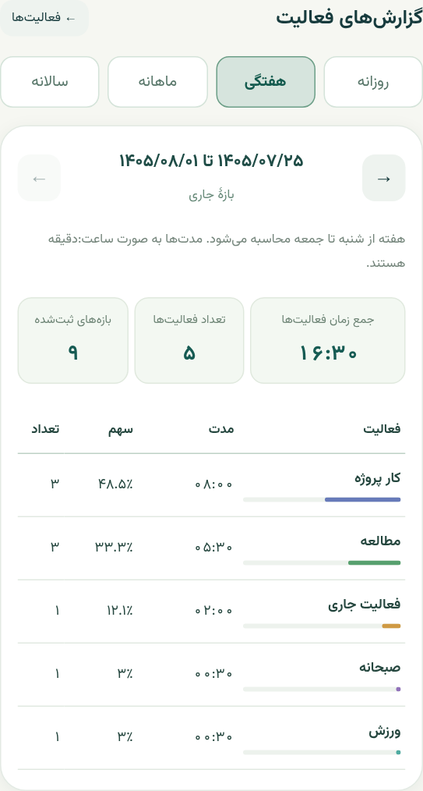
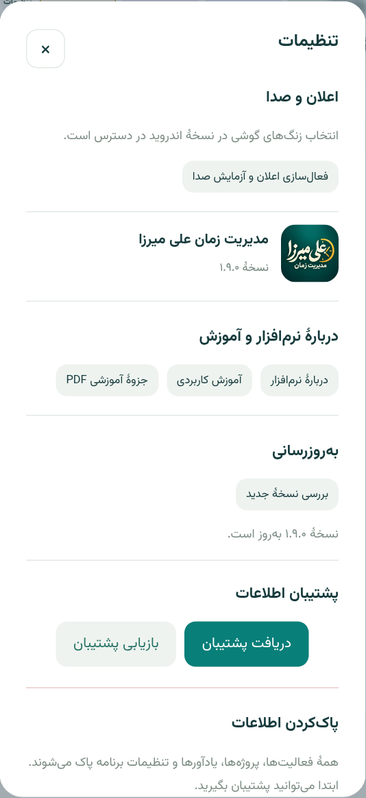

مدیریت زمان علی میرزا
از شروع روز تا گزارش فعالیتها؛ آموزش قدمبهقدم با نمونهٔ واقعی برنامه
مدیریت زمان
علی میرزا
روزتان را ثبت کنید، موعد کارها را به خاطر بسپارید و ببینید زمانتان کجا صرف شده است.
۱. شروع و ثبت روز
۲. مسیر روز و نمودار
۳. تایمر و یادآورها
۴. پروژهها و کارها
۵. فعالیتها و گزارشها
۶. تنظیمات و پشتیبان
۷. آپدیت و دربارهٔ برنامه
۸. پاسخ پرسشها
شروع روز و ثبت «تا الان چه کار کردم؟»
هر بار نام کاری را وارد میکنید که همین حالا تمام شده است؛ تایمر کار بعدی از مرز همان لحظه ادامه مییابد.
اولین استفاده
- صفحهٔ «امروز» را باز کنید. تاریخ شمسی، روز هفته و ساعت آنالوگِ دستگاه در بالا دیده میشود؛ زمان دقیق نیز زیر صفحهٔ ساعت قرار دارد. دکمهٔ گرد آموزش، کنار نام «علی میرزا»، کتابخانهٔ آموزشها را باز میکند.
- وقتی بیدار شدید، «الان بیدار شدم» را بزنید. زمان فعالیت جاری و زمان سپریشده از بیداری شروع میشوند.
- پس از پایان یک کار، مثلاً صبحانه، دکمهٔ گرد و سبز «تا الان چه کار کردم؟» را بزنید.
- نام «صبحانه» را بنویسید یا از پیشنهادها و کلیدهای پرکاربرد انتخاب کنید؛ سپس «ذخیره» را بزنید.
اگر اشتباهی دکمه را زدم
در پنجرهٔ ثبت، «انصراف» را بزنید. رکورد بیعنوان ساخته نمیشود و زمان فعالیت جاری از دست نمیرود.
پایان روز
در پایین صفحه، زیر سه بخش رنگی، دکمهٔ «پایان روز و ثبت آخرین فعالیت» را پیوسته ۵ ثانیه نگه دارید؛ نام آخرین فعالیت را وارد و ذخیره کنید. رهاکردن زودتر، پایان روز را لغو میکند.


مسیر روز و سهم فعالیتها
جدول برای ثبتهای دقیق است؛ نمودار به شما نشان میدهد سهم هر فعالیت از زمان سپریشده چقدر بوده است.
چه چیزی در هر ستون است؟
| ستون | معنی |
|---|---|
| از ساعت | زمان شروع همان بازه |
| تا ساعت | زمان پایان بازه |
| مدت | مدت کار به ساعت:دقیقه |
| فعالیت | نام کار؛ با لمس آن قابل اصلاح است |
جدول باز حدود شش سطر دارد؛ ادامه را داخل جدول اسکرول کنید. عنوان ستونها و «جمع زمان» ثابتاند. لیست کارها / پروژهها بنفش، مسیر روز کهربایی و نمودار آبی است.
خواندن مدت و درصد
۱۰:۳۰ یعنی ۱۰ ساعت و ۳۰ دقیقه؛ کمتر از یک دقیقه با عبارت «زیر یک دقیقه» نمایش داده میشود.
در نمودار، ثبتهای همنام با هم جمع میشوند. درصد از مجموع ثبتهای همان روز و فعالیت جاری محاسبه میشود؛ بنابراین درصدها سهم شما از یک شبانهروز ۲۴ساعته نیستند.
جمعکردن بخشها و دیدن روزهای قبل
سه بخش ابتدا جمعاند. سربرگ «لیست کارها / پروژهها» حتی بدون کار دیده میشود؛ توضیح خالیبودن داخل آن است.
عنوان یا پیکان هر بخش را بزنید تا باز یا بسته شود. پیکانِ حالت بسته قرمز و رو به بالا است؛ حالت باز، سبز و رو به پایین است. انتخاب شما ذخیره میشود.
فلشهای کنار عنوان «مسیر روز» روز قبل یا بعد را انتخاب میکنند؛ کلید «امروز» به روز جاری برمیگردد.


تایمر معکوس و یادآورهای شمسی
برای یک بازهٔ کوتاه تایمر بگذارید؛ برای یک روز و ساعت مشخص، یادآور بسازید.
مثال: ده دقیقه دیگر خبرم کن
- در صفحهٔ امروز، زیر زمان فعالیت، «تغییر زمان» را بزنید.
- چرخ انتخاب دقیقه را بالا و پایین ببرید و ۱۰ دقیقه را ذخیره کنید.
- «شروع» را بزنید. تایمر در حال اجرا قرمز میشود و دقیقه:ثانیه را نشان میدهد.
- «توقف» زمان باقیمانده را نگه میدارد؛ «ادامه» شمارش را ادامه میدهد؛ «ریست» آن را به مدت تنظیمشده برمیگرداند.
مثال: فردا ساعت مشخص یادم بینداز
- در «یادآورها»، «یادآور جدید» را بزنید.
- عنوانی روشن، مانند «تماس با استاد»، بنویسید.
- سال، ماه و روز شمسی و ساعت را انتخاب کنید. روز هفته را بررسی کنید تا تاریخ اشتباه انتخاب نشود.
- تکرار را روی بدون تکرار، هر روز یا هر هفته قرار دهید و ذخیره کنید.
در کارت یادآور، تاریخ عددی مانند ۱۴۰۵/۰۷/۲۹ و روز هفته و زمان دیده میشود. کلید «ویرایش» برای تغییر موعد است؛ کلید وضعیت، یادآور را فعال یا غیرفعال میکند. ضربدر بزرگ «×» کنار هر یادآور برای حذف همان یادآور است؛ پیام حذف را پیش از تأیید بخوانید.


ساخت پروژه، کار و موعد انجام
هر پروژه یک پوشه برای کارهای مرتبط است؛ وضعیت هر کار و وضعیت خود پروژه مستقلاند. رنگ بنفش صفحهٔ پروژهها با بخش «لیست کارها / پروژهها» در امروز هماهنگ است.
مثال: پروژهٔ «خانه بالا»
- در «پروژهها»، «اضافه کردن پروژه» را بزنید و نام «خانه بالا» را ثبت کنید.
- روی ردیف پروژه بزنید تا کارهایش باز شوند؛ با زدن دوباره، همهٔ زیرشاخههایش بسته میشوند.
- برای اصلاح عنوان، «ویرایش نام» روی همان پروژه را بزنید.
- «کار جدید» را بزنید؛ متن کار و توضیح چندخطی، مثلاً «خرید آهن؛ هماهنگی با فروشنده»، را وارد کنید.
- اگر موعد دارد، یادآوری را فعال کنید و تاریخ شمسی و زمان را تعیین کنید.
وقتی کار انجام شد
روی دکمهٔ کار بزنید و «انجام شد؛ انتقال به انجامشدهها» را انتخاب کنید. همان کار، زیر نام پروژه در انجامشدهها میرود؛ پروژه خودکار جابهجا نمیشود.
کار موعددارِ امروز، در بخش بنفش «لیست کارها / پروژهها» بالای «مسیر روز» هم دیده میشود. علامت انجامشدن را میتوانید از همانجا بزنید.
بازگرداندن کار یا کل پروژه
در «انجامشدهها» پروژه را باز کنید. برای یک کار، گزینهٔ بازگشت آن را بزنید؛ برای جابهجایی یکجای همهٔ کارها، از کلید انتقال روی ردیف پروژه استفاده کنید. زمان انجامشدن و سابقهٔ تغییر وضعیت کار قابل مشاهده است.
حذف و بازیابی پروژه
«حذف پروژه» را ۵ ثانیه نگه دارید و سپس حذف را تأیید کنید. پروژه با کارهایش در «انجامشدهها ← پروژههای حذفشده» میماند. با «بازیابی پروژه» آن را برگردانید.

مدیریت نام فعالیتها و گرفتن گزارش
از نامهای یکسان استفاده کنید تا زمانهای مربوط به یک کار در گزارشها درست با هم جمع شوند.
ثبت یا اصلاح نام فعالیت
- در «فعالیتها» فهرست نامهای ثبتشده را ببینید.
- «فعالیت جدید» را بزنید و نامی مانند «مطالعه کتاب» بسازید.
- برای یافتن یک نام، در جستجو چند حرف آن را بنویسید.
- با «ویرایش» نام را اصلاح کنید. اصلاح نام از فهرست فعالیتها، سوابق همنام را هم اصلاح میکند.
مثال: این هفته چقدر مطالعه کردم؟
- کنار «فعالیت جدید»، «گزارشهای فعالیت» را باز کنید.
- نوع دوره را «هفته» انتخاب کنید. برای یک روز، ماه یا سال، نوع همان دوره را بزنید.
- از کلیدهای دورهٔ قبل و بعد، یا بازگشت به دورهٔ جاری، استفاده کنید.
- نام فعالیت، مدت و درصد سهم آن را در همان دوره بخوانید؛ جمع زمان مجموع فعالیتهای آن بازه است.
دورهها چگونه محاسبه میشوند؟
روز و ساعت بر اساس زمان دستگاه است؛ هفته از شنبه شروع میشود و ماه و سال بر اساس تقویم شمسیاند. بخشی از یک فعالیت که بیرون دوره افتاده، در جمع این دوره حساب نمیشود.
مثلاً فعالیت ۲۳:۳۰ تا ۰۰:۳۰، در گزارش هر روز فقط ۳۰ دقیقه سهم دارد. دورهٔ بدون فعالیت، گزارش خالی نشان میدهد؛ زمان ساختگی اضافه نمیشود.

تنظیمات، صدای زنگ و پشتیبان
تنظیمات برنامه و اطلاعات نسخه را در بخش تنظیمات ببینید؛ پشتیبان، راه انتقال دادهها بین وب و اندروید است.
انتخاب صدا در اندروید
- «تنظیمات» را باز کنید و به بخش صداها بروید.
- برای تایمر معکوس و یادآورها میتوانید صدای جدا انتخاب کنید.
- کلید انتخاب صدا، فهرست صداهای خود گوشی را باز میکند؛ صدا را انتخاب و تأیید کنید.
- برای بررسی، «پخش» کنار صدای انتخابشده یا «آزمایش صدا» را بزنید. شدت صدا را در تنظیمات زنگِ خود گوشی نیز بررسی کنید.
انتخاب صداهای گوشی، قابلیت نسخهٔ اندروید است؛ مرورگر به فهرست زنگهای سیستم اندروید دسترسی ندارد.
دریافت پشتیبان: یک نسخه از اطلاعات خود بردارید
- در تنظیمات، بخش «پشتیبان اطلاعات» را باز کنید.
- «دریافت پشتیبان» را بزنید و فایل JSON را در محل مطمئن ذخیره کنید.
- پیش از ریست روز، تعویض گوشی یا پاککردن اطلاعات برنامه، یک پشتیبان تازه بگیرید.
بازیابی: فایل را به برنامه برگردانید
- روی دستگاه مقصد، «بازیابی پشتیبان» را بزنید.
- فایل JSON قبلی را انتخاب کنید؛ پیام جایگزینی اطلاعات را بخوانید.
- فقط اگر فایل درست است، تأیید کنید.
پاککردن همهٔ اطلاعات
در تنظیمات، «پاککردن همهٔ اطلاعات» را بزنید. سه تأییدِ جدا لازم است؛ تا تأیید سوم، چیزی پاک نمیشود و «انصراف» در هر مرحله آن را لغو میکند. این کار ثبتها، پروژهها، یادآورها و تنظیمات برنامه را پاک میکند؛ پیشتر پشتیبان بگیرید. فایل پشتیبانی که جدا ذخیره کردهاید حذف نمیشود.

آپدیت و دربارهٔ برنامه
نسخهٔ برنامه را بررسی کنید و فایل نصب را از لینک رسمی دریافت کنید؛ راهنمای وب و PDF هم از «دربارهٔ نرمافزار» در دسترساند.
آپدیت تازه را چطور نصب کنم؟
- به اینترنت وصل شوید. اگر نسخهٔ جدید منتشر شده باشد، در بالای تاریخِ صفحهٔ «امروز» هشدار بزرگ و قرمزِ آپدیت نمایش داده میشود.
- روی «دریافت آپدیت» بزنید. در اندروید فایل نصب به پوشهٔ دانلودها میرود؛ پیشرفت یا تکمیل دانلود را در اعلان گوشی ببینید.
- پس از تأیید فایل، «نصب آپدیت» را بزنید یا فایل APK را از دانلودها باز کنید. اگر گوشی اجازه خواست، نصب از همین برنامه را مجاز کنید و نصب را خودتان تأیید کنید.
- برنامهٔ قبلی را حذف نکنید؛ فایل تازه را روی همان برنامه نصب کنید تا اطلاعات قبلی حفظ شود. پیش از بهروزرسانی، پشتیبان گرفتن کار مطمئنی است.
ممکن است Google Play Protect برای فایل نصبشده از لینک، بررسی امنیتی پیشنهاد کند. این پیام متعلق به اندروید و گوگل است؛ برنامه نمیتواند پنهانکردن آن را تضمین کند. گزینهٔ «اسکن برنامه» بررسی معمول فایل است.
دربارهٔ برنامه و آموزش
برای دسترسی سریع، دکمهٔ گرد آموزش کنار نام «علی میرزا» را بزنید؛ موضوعها، تصاویر راهنما و جزوهٔ PDF در کتابخانهٔ آموزشها قرار دارند. در تنظیمات، «دربارهٔ نرمافزار» را باز کنید. نام، نسخه و لینک راهنما در همین بخش هستند. «آموزش کاربردی» همین راهنمای قابل جستجو و بخشبندی را نشان میدهد؛ «جزوهٔ آموزشی PDF» برای ذخیره، مطالعهٔ آفلاین و چاپ است.
این نرمافزار توسط امین نقدی پور برای ثبت و مدیریت زمان روزانه، ساماندادن به پروژهها و پیگیری کارها طراحی شده است. شماره تماس طراح: 09131693134.
برنامه رایگان است
استفاده از برنامه رایگان است و به خرید اشتراک یا پرداخت هزینه نیاز ندارد. پس از هر ۳۰ روز، برنامه پیام یادبود را نمایش میدهد: ده صلوات یا فاتحه برای «آقای علی میرزا نقدی پور».
برای ادامهٔ استفاده، پس از خواندن فاتحه یا فرستادن صلوات، دکمهٔ «فرستادم / خواندم» را بزنید. برنامه فقط تأیید خود شما را دریافت میکند؛ راهی برای تشخیص انجام واقعی این کار ندارد. این پیام از روز اول نمایش داده نمیشود.
کارکرد زنگ در پسزمینه، روی صفحهٔ قفل و بعد از راهاندازی مجدد، به مجوزها و محدودیتهای اندروید و سازندهٔ گوشی هم وابسته است. بررسی رابط و ساخت فایل نصب، جای آزمایش زنگ روی گوشی واقعی را نمیگیرد.
پاسخهای کوتاه برای استفادهٔ روزمره
روی هر پرسش بزنید تا پاسخ آن باز شود. در نسخهٔ PDF همهٔ پاسخها دیده میشوند.
نام فعالیت را اشتباه نوشتم؛ دوباره ثبت کنم؟
نیازی نیست. در جدول مسیر روز روی نام همان فعالیت بزنید و اصلاح کنید. برای اصلاح همهٔ سوابق همنام، از فهرست فعالیتها نام را ویرایش کنید.
چرا پروژه هنوز در انجامنشدههاست، با اینکه کارش تمام شده؟
پروژه و کار مستقلاند. تمامشدن کار، فقط همان کار را به انجامشدهها میبرد. برای انتقال خود پروژه، کلید انتقال روی ردیف پروژه را بزنید.
کار انجامشده را اشتباه علامت زدم؛ چطور برگردانم؟
پروژهها ← انجامشدهها؛ پروژه را باز و روی کار بزنید، سپس بازگشت به انجامنشدهها را انتخاب کنید. برای زنگ تکبار گذشته، موعد آینده تعیین کنید.
چرا «پایان روز» یا «حذف پروژه» با یک ضربه کار نمیکند؟
برای جلوگیری از اشتباه، این دو دکمه نیاز به نگهداشتن پیوستهٔ ۵ ثانیه دارند. پایان روز سپس نام آخرین فعالیت را میخواهد؛ حذف پروژه هم تأیید جدا دارد.
زنگ به صدا درنیامد؛ چه چیزهایی را بررسی کنم؟
تاریخ و ساعت دستگاه، فعالبودن یادآور، مجوز اعلان و زنگ دقیق، صدای انتخابشده و بلندی صدای زنگ را بررسی کنید. در اندروید محدودیت باتری را هم ببینید؛ در وب صفحه باید باز و دستگاه فعال باشد. یک تایمر یکدقیقهای آزمایش کنید.
میخواهم امروز را از ساعت ۷:۳۰ دوباره شروع کنم.
پایین صفحهٔ امروز «شروع دوبارهٔ امروز از ساعت دلخواه» را بزنید، علامت ساعت را بزنید و ساعت و دقیقه را جداگانه بچرخانید تا ۰۷:۳۰ انتخاب شود؛ سپس پاکشدن ثبتهای امروز را تأیید کنید. «همین الان» شروع از لحظهٔ تأیید است. ساعت آینده پذیرفته نمیشود.
اطلاعات وب را در اندروید نمیبینم.
این دو محل ذخیره جدا هستند. در وب پشتیبان JSON بگیرید و همان فایل را در تنظیمات نسخهٔ اندروید بازیابی کنید. بازیابی اطلاعات فعلی مقصد را جایگزین میکند.
مدت «۰۱:۳۰» و درصد «۲۵٪» چه تفاوتی دارند؟
۰۱:۳۰ یعنی یک ساعت و سی دقیقه. ۲۵٪ یعنی سهم آن فعالیت از جمع زمان محاسبهشدهٔ همان روز یا دوره؛ درصد مدت مستقل دیگری نیست.